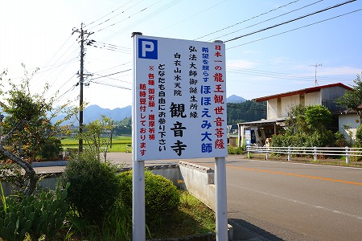

宮崎でのドライブ中、この日の目的地を全部訪問し、あとは宿泊先の街へ行くだけという状況。
私のような因果な旅をされている方ならよくお判りだと思うが、この「今からひとイベント組むには時間がないけど宿に行くにはチト早いかな」、という時が案外旅の醍醐味だったりする。
…というわけでこの日は温泉にでも寄ろうかと思い、カーナビで適当に検索した温泉を目的地に設定し、な〜にも考えずにドライブしていた。
と、その時！
何もない田園風景の中に人型の「何か」が立っているのだ。
アレはもしかして
まだ見ぬ大観音では…
こうなると温泉の事など後回し。それまで散々悪態をついていたレンタカーのカーナビのお導きに感謝しつつ、その巨大なる人影に近づいて行くのであった…。
カーナビって時にはマジカルな魔力を発揮するものですね…。

おおお、日本一の龍王観世音菩薩とな！
どなたでもご自由にお参り下さい、とあるぞ。ご自由に参らせていただきますとも！
傾き掛けた夏の陽に見事な弩逆光の観音様。まあ、それでも結構です。
出会えたのが何よりの幸運ですぞ。
観音像には龍が巻き付いており、なかなかのサイズ。
建立は平成21年。高さは台座込みで18メートル。
恐らく像高でいえばその半分程度だろう。
一般的に足元に龍を従えた観音像は昇龍観音と呼ばれている。
昇龍観音としては九州でも
あんなとこや
あんなとこにココよりはるかに巨大な先輩がおり、残念ながら日本一どころか九州でも一番ではない。
しかし。
ここの観音様はあくまでも昇龍観音ではなく、龍王観音なのだ。
そのような観音様は聞いたことがないので、まあ、多分日本一でしょうな。
というわけで日本中の大仏大観音を観てきた私、小嶋独観がこの場をお借りして高らかに宣言させていただきますよ。
ここの観音様は日本一の龍王観世音菩薩である、と。
大きさの事はさておき…
ここの観音様、
台座が凄くないっすか？
最初意味がわからなかったのだが、龍の胴体が水面から出たり隠れたりしているんですね。
最初てっきりムカデが這っているんだと思いましたよ。
正面には龍の顔があったので一安心。ムカデじゃなかったんだ〜。
四方の壁面にのたうち回る龍。
うむー、申し訳ないがやっぱりムカデっぽいような…。
そうこうしているうちに住職さんがお出でになった。
台座の中を案内していただく。ありがたや。
観音像は中国産。その観音様に巻き付く龍は富山産との事。
成程。観音様に巻き付いている方の龍は中々のクオリティ。
台座の龍とのギャップがまた実に香ばしいのである。
台座の内部には祭壇があり、右手の階段を下りていくと戒壇巡りになっている。
ついでに四国八十八カ所と西国三十三カ所巡りも兼ねているのだ。
裏に回ってみる。
壁面の水色は水面を意図しているのだろうか。
所々龍の胴体が見え隠れしている。その周辺には雲や天女が配されている。
そっか、この水色は空なのか。
ああ、それぞれの壁面に龍の頭が付いているのか。
という事は壁に4匹の龍、観音様に巻き付く龍を足して5匹の龍がいる、ということなのね。
住職さんは如何にこの観音様を設置するのが大変だったかを力説されていた。
わかります、わかります…。
しかし大変申し訳ないが、
やっぱり台座にしか目が行かないっす。
観音様の裏側に本堂があり、その周辺にも何やら様々なアイテムが。

このお寺のもう一つの名物、ほほえみ大師。